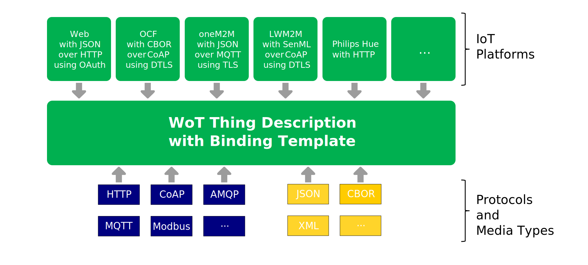
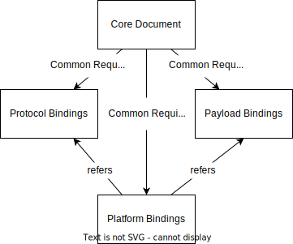

W3C Web of
Things enables applications to interact with and orchestrate
connected Things at the Web scale. The standardized abstract
interaction model exposed by the WoT Thing Description enables
applications to scale and evolve independently of the
individual Things.
Many network-level protocols, standards and platforms for
connected Things have already been developed, and have millions
of devices deployed in the field today. These standards are
converging on a common set of transport protocols and transfer
layers, but each has peculiar content formats, payload schemas,
and data types.
Despite using unique formats and data models, the high-level
interactions exposed by most connected things can be modeled
using the Property, Action, and Event interaction affordances
of the WoT Thing Description.
Binding Templates enable a Thing Description to be adapted
to a specific protocol, data payload formats or platforms that
combine both in specific ways. This is done through additional
descriptive vocabularies, Thing Models and examples that aim to
guide the implementors of Things and Consumers alike.
This core specification document acts as a base and explains
how other binding templates should be designed. Concrete
binding templates are then provided in their respective
documents, referred to as subspecifications, that are linked to
from this document.
Status of This Document
This section describes the status of this document at
the time of its publication. A list of current W3C
publications and the
latest revision of this technical report can be found in the
W3C technical reports
index at https://www.w3.org/TR/.
Editor's note: The
W3C WoT WG is asking for feedback
Please contribute to this draft using the
GitHub Issue feature of the WoT Binding
Templates repository. For feedback on security and
privacy considerations, please use the WoT Security
and
Privacy Issues, as they are cross-cutting over all our
documents.
Publication as an Editor's Draft does not imply endorsement
by W3C and its
Members.
This is a draft document and may be updated, replaced or
obsoleted by other documents at any time. It is inappropriate
to cite this document as other than work in progress.
This document was produced by a group operating under the
W3C
Patent Policy.
W3C maintains a
public list of any
patent disclosures made in connection with the deliverables
of the group; that page also includes instructions for
disclosing a patent. An individual who has actual knowledge of
a patent which the individual believes contains Essential
Claim(s) must disclose the information in accordance with
section
6 of the W3C
Patent Policy.
IoT addresses multiple use cases from different application
domains, while requiring different deployment patterns for
devices. This results in different protocols and media types,
creating the central challenge for the Web of Things: enabling
interactions with the plethora of different IoT platforms and devices
that do not follow any particular standard, but provide an
eligible interface over a suitable network protocol. WoT is
addressing this challenge through Binding Templates.
Binding Templates consist of multiple specifications,
referred to as a subspecification in this
document, that enable an application client (a WoT Consumer) to interact, using WoT
Thing Description[WOT-THING-DESCRIPTION]
(TD), with Things that exhibit diverse protocols, payload
formats and a combination of these in platforms and frameworks.
The mechanism that allows Consumers to interact with a variety
of Things is called the Binding Mechanism, without which TDs
could not build Hypermedia Controls as explained in the
[WOT-ARCHITECTURE].
When describing a particular IoT device or platform, the
corresponding Binding Template can be used to look up the
communication metadata that is to be provided in the Thing
Description to support that platform.
Figure 1 shows how Binding Templates
are used. Based on the protocol, media type or platform binding
template, a TD is created. The Consumer that is processing a TD
implements the required Binding Template that is present in the
TD by including a corresponding protocol stack, media type
encoder/decoder or platform stack and by configuring the stack
(or its messages) according to the information given in the TD
such as serialization format of the messages and header
options.

Figure
1Platforms, Protocols and Media Types as
building blocks for binding templates and TD
Each Interaction Affordance in a TD needs to have a binding
to a protocol and to a payload format.
Figure 2 below illustrates an excerpt
of a TD of a robot arm with of HTTP and JSON bindings. Here,
the Consumer intends to invoke an action of the robot arm
(goTo) in order to move it to the position x
equals 12 and y equals 100. In order to do so, it creates the
correct payload, serializes it and sends it using the correct
protocol options. The Thing gets the message over the network
and responds with a message that corresponds to its TD. Other
protocols, payload formats or their combination are possible
and are explained in 4. Binding Template
Mechanisms.
Figure
2Binding Templates Mechanism inside a TD
excerpt
with messages of its Thing and a Consumer.
As well as sections marked as non-normative, all authoring
guidelines, diagrams, examples, and notes in this specification
are non-normative. Everything else in this specification is
normative.
The key words MAY, MUST, SHOULD,
and
SHOULD NOT in this document are to be
interpreted as described in BCP 14
[RFC2119]
[RFC8174]
when, and only when, they appear in all capitals, as shown
here.
3.
Terminology
This section is non-normative.
The fundamental WoT terminology such as Thing,
Consumer,
Thing
Description (TD), Interaction
Model, Interaction
Affordance, Property, Action, Event, Data Schema, Content Type, Protocol
Binding, Binding Template, Servient, Vocabulary, WoT Interface, WoT Runtime, IoT Platform, etc. is defined in
Section
3 of the WoT Architecture specification [WOT-ARCHITECTURE].
In addition, this specification introduces the following
definitions:
A binding template document that is published separately
from this document (called the core document) that
specifies a binding template for a protocol, payload format
or platform. All binding template subspecifications respect
the rules set in the Core Specification.
This document. All binding template subspecifications
respect the rules set in the Core Specification.
4. Binding Template Mechanisms
TDs can be bound to specific protocols, payload formats and
platforms. This is possible through the three core mechanisms
that allow WoT to be used in various domains and scenarios.
This section explains how these binding mechanism types are
structured, should be specified, and links to corresponding
binding documents (subspecifications). These 3 types of
mechanisms are:
Protocols: Application layer protocols (e.g.,
HTTP[RFC7231],
CoAP[RFC7252],
MQTT[MQTT], etc.)
whose different message types are mapped to the WoT Thing
Description[WOT-THING-DESCRIPTION]
forms via reusable vocabulary and extensions.
Payloads: Different payload formats and media
types [IANA-MEDIA-TYPES] which can be
represented in a TD via Data Schemas or forms.
Platforms: Platforms and frameworks who combine
the use of protocols and payloads in a certain way, which can
be represented via entire Thing Models described by the
[WOT-THING-DESCRIPTION]
or examples of TDs.

Figure
3Binding Templates Overview and the
Relationships between each Document Type
Each Protocol and Payload Binding Template is specified in a
way that they stay independent from each other. This means that
each document can be read independently from the other and can
be also developed independently. However, Platform Binding
Templates are dependent on the Protocol and Payload Binding
Templates, since a given platform uses different protocols and
payload formats that need to be specified first in their
respective binding templates and referred to within a Platform
Binding Template.
4.1 Protocol Binding Templates
4.1.1 Introduction to Protocol
Binding Templates
[WOT-THING-DESCRIPTION]
defines abstract operations such as
readproperty, invokeaction and
subscribeevent that describe the intended
semantics of performing the operation described by the form
in a Thing Description. In
order for the operations to be performed on the affordance,
a binding of the operation to the protocol needs to happen.
In other words, the form needs to contain all the
information for a Consumer to, for example read a property,
with the protocol in the form.
Most protocols have a relatively small set of methods
that define the message type, the semantic intention of the
message. REST and PubSub architecture patterns result in
different protocols with different methods. Each target
protocol may specify different method names for similar
operations, and there may be semantic differences between
similar method names of different protocols. Additionally,
Things
may use different
methods for performing a particular WoT operation. For
example, an HTTP POST request may be used for a
writeproperty operation in one Thing, while
HTTP PUT may be used in another. For these reasons, Thing
Descriptions require the ability to specify which method to
use per operation.
Common methods found in REST and PubSub protocols are
GET, PUT, POST, DELETE, PUBLISH, and SUBSCRIBE. Binding
Templates describe how these existing methods and
associated vocabularies can be used in a Thing Description to
bind to the WoT operations. This is done by defining the
URI scheme of the protocol and mapping the protocol methods
to the abstract WoT operations such as
readproperty, invokeaction and
subscribeevent. In some cases, additional
instructions are provided to explain how the vocabulary
terms should be used in different cases of protocol
usage.
The examples below show the binding of the
readproperty operation for the HTTP and Modbus
protocols. Please note that these are examples and please
always refer to the corresponding binding to learn about
the relevant vocabulary terms and their values.
Example 1: Binding example of a
readproperty operation to HTTP
The form elements in the examples above convey the
following statements:
Left Example: To do a readproperty of
the subject Property Affordance by performing an HTTP GET
request on the resource props/temperature to
the host at example.com on port
80 (Port 80 is assumed as per
[RFC2616]).
Right Example: To do a readproperty of
the subject Property Affordance using the
readCoil function of Modbus at coil
1 of the device with the
127.0.0.1 address at its port
60000
These bindings and their statements are possible for
other operations and protocols as well. Below are examples
for invokeaction and
subscribeevent:
Example 3: Binding example of an
invokeaction operation to HTTP
The form elements in the examples above convey the
following statements:
Left Example: To do an invokeaction of
the subject Action Affordance by performing an HTTP POST
request on the resource example/levelaction
to the host at 192.168.1.32 on port
8081.
Right Example: To do a subscribeevent of
the subject Event Affordance by connecting to the MQTT
broker at iot.platform.com and port
8088, then subscribing to the topic
thing1/events/overheating.
In some cases, header options or other parameters of the
protocols need to be included. Given that these are highly
protocol dependent, please refer to the bindings listed in
4.1.3 Existing Protocol
Binding Templates. Additionally, protocols may have
defined Subprotocols that can be used for some interaction
types. For example, to receive asynchronous notifications
using HTTP, some servers may support long polling
(longpoll), WebSub [WebSub] (websub) and
Server-Sent Events [eventsource]
(sse).
4.1.1.1 Subprotocols
As defined in [WOT-ARCHITECTURE],
a subprotocol is an extension mechanism to a protocol. A
subprotocol can require a sequence of protocol messages
or a specific structure of message payloads, which can
have its own semantics within that subprotocol. The use
of a subprotocol is expressed with the
subprotocol field, as defined in
[WOT-THING-DESCRIPTION].
It can be used in a form instance to indicate the use of
one of these protocols, for example long polling with its
special use of HTTP:
Example
5:
Subprotocol usage for subscribing events
The values that the subprotocol term can
take is not constrained by the [WOT-THING-DESCRIPTION]
since different protocols can have different
subprotocols. Correspondingly, subprotocols are linked to
the protocol they are extending and should be understood
together with the protocol indicated in href
of the forms (or the base). For WebSockets,
the IANA-registered Websocket Subprotocols
[iana-web-socket-registry]
may be used. For CoAP,
"subprotocol":"cov:observe" can be used to
describe asynchronous observation operations as defined
by [RFC6741].
The subprotocols can be defined and explained as a part
of a protocol or platform binding subspecification.
4.1.2 Terms Specified by
Protocol Binding Templates
Overall, a protocol binding template specifies the
values and structure of certain vocabulary terms in a TD.
The table below lists the vocabulary term, the class it
belongs to and whether the subspecification is required to
specify the values the term can take. In addition to these,
additional terms for describing protocol options are
typically added.
Table
1Terms specified by Protocol
Binding
Templates
4.1.4 Using a Thing Description
with a Protocol Binding Template
Subspecification
Protocol Binding Templates contain vocabularies that
extend the vocabulary found in the [WOT-THING-DESCRIPTION].
This means that the way a TD is consumed and how the
interactions happen with the Thing are adapted to such
vocabularies. The steps below explain how this process
typically looks like.
Detect the protocol: Upon the activation of a
form to execute the operation, the ConsumerSHOULD look at the
href member and the base (if
exists) and identify the protocol.
Choose the correct protocol stack: The ConsumerSHOULD use choose the correct
protocol from its protocol software stacks.
Validate the forms part of the TD: Using the
JSON Schema instances provided in the respective
subspecification or through programmatically checking
key value pairs, the ConsumerMAY validate the
respective form terms
in order to verify they are correctly specified in the
TD instance.
Start communication: The ConsumerSHOULD send requests for
the chosen
operation as specified by the form and additional
behavior that is expected. These are specified using
the different form terms such as
subprotocol or other vocabulary terms
introduced by the protocol binding. The interaction
affordance data exchanged with the Thing SHOULD be according to the Data Schema
and Content Type present
in the TD. The corresponding Data Schema to the
operation can be found in the [WOT-THING-DESCRIPTION],
table called Mapping op Values to Data Schemas.
4.1.5 Creating a new Protocol
Binding Template Subspecification
When creating a new protocol binding template subspecification,
e.g. based on a new communication protocol, the proposed
document should enable implementations of this binding in
an interoperable way for Consumer and Producer
implementations. More specifically, each Binding Template
SubspecificationMUST specify
the following:
URI Scheme: For identification of the used
protocol, a standardized URI scheme [RFC3986]
value MUST be declared in the
form of a string. This URI Scheme is used in TDs at top
level base or in the href term
of the forms container. These can be
officially registered ones at IANA [iana-uri-schemes]
(e.g. "https://", "coap://") or
they can be declared in the protocol subspecification
(e.g. "mqtt://",
"modbus+tcp://"). How the full URI can be
constructed for different affordances (or resources)
MUST be specified as well.
@context Usage and Ontology: A
vocabulary that allows adding protocol options to a Thing
Description forms SHOULD be
provided to allow semantic annotations of the operations
with protocol specific information. The prefix and IRI to
be used in the @context in order to link to
the vocabulary of the protocol SHOULD be also provided. The prefix
SHOULD use the v
suffix notation in order to avoid confusion with the URI
scheme of the protocol (e.g. htv for HTTP
and mqv for MQTT).
Mapping to WoT Operations: Most protocols have
a set of methods or verbs that adds a meaning to the
messages of the protocol. A protocol binding template
MUST be able to map WoT
operation types (readproperty,
invokeaction, etc.) to concrete protocol
message types or methods. When specifying the mapping,
the mapping SHOULD be
bidirectional, i.e. it should be clear how to do a
readproperty operation with the given
protocol and how an existing implementation's endpoints
can be mapped to a WoT operation should be also
clear.
JSON Schema: A JSON Schema to validate the forms
of a TD using the Protocol Binding SHOULD be provided. This allows
validation of the URI scheme and the vocabulary terms.
The JSON Schema instance SHOULD follow the template provided in
the Binding Templates GitHub Repository.
Specification: The official specification
document of the protocol SHOULD
be provided. This SHOULD be a
static version, i.e. the exact document used during the
writing of the binding that is guaranteed to not change.
If this is not possible, the specification should be
marked with a date of access. When the specification is
not publicly available and cannot be linked with a static
version, an editor's note should be provided in the
introduction, explaining how to get access to the
specification.
A template is also provided for new protocol binding
template specifications at
the GitHub Repository.
4.2 Payload Binding Templates
4.2.1 Introduction to Payload
Binding Templates
[WOT-THING-DESCRIPTION]
defines two mechanisms to describe how a payload of a
message over any protocol can look like. Firstly, media
types [IANA-MEDIA-TYPES] describe the
serialization used for sending and receiving the data with
a protocol. They are represented within the
contentType in the Forms of a TD, which is
mandatory for each Interaction Affordance. Secondly, it
defines the Data Schema concept to describe the structure
of the messages, which are used together with media types.
The combination of the two allows any message to be
described in a TD, allowing correct serialization and
deserialization of the messages by the Thing and
Consumers.
Content type includes the media type and potential
parameters for the media type and it enables proper
processing of the serialized documents. This way, the
messages can be exchanged in any format and allow the
upper layers of an application to adapt to different
formats. In some cases such as images, videos or any
unstructured data, content type is enough to describe the
payload but in cases like JSON ([RFC8259])
a Data Schema is usually provided, like explained in
4.2.1.2 Data
Schemas.
For example, a number payload can be serialized as
JSON or XML and be indicated in the
contentType of the forms with
application/json or
application/xml, respectively. Further
parametrization is possible via the plus (+)
or the semicolon (;) notations.
In the example below, you can find the form elements
with content types for JSON and plain text with
additional parameters. In this specific case, the forms
describe that reading this property with
http or coap result in
different content types. For structured media types, a
Data Schema is generally provided in the affordance level
as explained in 4.2.1.2 Data
Schemas and
in the Data Schema section of the TD specification.
However, for unstructured data such as images and videos,
a Data Schema is typically not available.
Other content types can be also expressed in TDs. In
the list below, examples of different content type
variations can be found. These content types can replace
the ones in Example 6.
application/senml+json: SenML Data
serialized in JSON [RFC8259]
application/senml+xml: SenML Data
serialized as XML
application/ocf+cbor: OCF payload
serialized in CBOR
text/csv;charset=utf-8: CSV
encoded in UTF-8 [RFC4180]
Unstructured Content Types
image/jpeg: JPEG image
video/mp4: MP4 Video
application/octet-stream: Generic
binary stream
4.2.1.2 Data Schemas
Data Schema, as explained in [WOT-THING-DESCRIPTION],
describes the structure of the messages, which are used
together with media types. Even though it is largely
inspired by JSON Schema [json-schema],
it can be used for describing other payload types such as
[XML],
string-encoded images, bit representations of integers,
etc. Data Schema SHOULD be used
in addition to the media types.
Depending on the case, the structure of the messages
can be anything from a simple number to arrays or objects
with multiple levels of nesting. Existing IoT Platforms
and Standards have certain payload formats with
variations on how the data is structured. As explained in
[WOT-THING-DESCRIPTION],
Data Schema can be used in a TD in one of the following
places:
Property Affordances: Each property
affordance can contain terms for Data Schema and
describe the property values when read, observed or
written to.
Action Affordances:input and
output vocabulary terms are used to
provide two different schemas when data is exchanged in
both directions, such as in the case of invoking an
Action Affordance with input parameters and receiving
status information.
Event Affordances:data,
dataResponse, subscription
and cancellation are used to describe the
payload when the event data is delivered by the Exposed
Thing, the payload to reply with for event deliveries,
the payload needed to subscribe to the event and the
payload needed to cancel receiving event data from the
Exposed Thing, respectively.
URI Variables: In the Thing or Affordance
level, uriVariables can describe the data
that needs to be supplied inside the request URI as a
string.
4.2.2 Terms Specified by Payload
Binding Templates
Overall, a payload binding template specifies the values
and structure of certain vocabulary terms in a TD. The
table below lists the vocabulary term, the class it belongs
to and whether the subspecification is required to specify
the values the term can take. In addition to these,
additional vocabulary terms can be added and restrictions
to Data Schema terms can be placed.
Table
3Terms specified by Payload
Binding
Templates
Term
Class
Specification Requirement
contentType
Form
mandatory
contentType
ExpectedResponse
optional
contentType
AdditionalExpectedResponse
optional
contentCoding
Form
optional
4.2.3 Existing Payload Binding
Templates
The table below summarizes the currently specified
payload binding templates.
4.2.4 Creating a new Payload
Binding Template Subspecification
Each payload binding template subspecification,
SHOULD contain the respective
media type. Ideally this media type has been registered at
the IANA registry [IANA-MEDIA-TYPES] with a
corresponding mime type (e.g.
application/json). If it is not registered,
the binding document can propose a mime type. Additionally,
how that media type is represented in a Data Schema
SHOULD be demonstrated with
examples. In all cases, the following information
SHOULD be provided:
Specification: The official specification
document of the payload format SHOULD be provided. This SHOULD be a static version, i.e. the exact
document used during the writing of the binding that is
guaranteed to not change. If this is not possible, the
specification should be marked with a date of access.
When the specification is not publicly available and
cannot be linked with a static version, an editor's note
should be provided in the introduction, explaining how to
get access to the specification.
4.3 Platform Binding Templates
4.3.1 Introduction to Platform
Binding Templates
There are already various IoT platforms on the market
that allows exposing physical and virtual Things to the
Internet. These platforms generally require a certain use
of a protocol and payload. Thus, they can be seen as a
combination of the 4.1
Protocol Binding
Templates and 4.2
Payload Binding
Templates. In these cases, the use of protocol and
payload bindings needs to be supported with how they are
related to each other in the specific platform.
For example, Things of a certain platform can require
the usage of HTTP and Websockets together with certain JSON
payload structures. Thus, Platform Binding subspecifications
provide Thing Models and examples of TDs that allow to
semantically group multiple binding templates. This allows
creation of TDs for these platforms in a consistent manner
and makes it easier to develop Consumers for them.
Since Platform Binding Templates combine the usage of
protocol and payload binding templates, the vocabulary
terms and values they can specify are the combination of
vocabulary terms in Table
1 and Table
3. Similarly, a Platform Binding
subspecification SHOULD NOT
introduce new protocol binding templates or media types
inside its own document. If a Platform Binding
subspecification requires the usage of protocol or media
type, corresponding protocol or payload binding templates
MUST be created first.
4.3.2 Existing Platform Binding
Templates
The table below summarizes the currently specified
platform binding template subspecifications.
Name
Link
Philips Hue
Planned
ECHONET
Planned
OPC-UA
Planned
4.3.3 Creating a new Platform
Binding Template Subspecification
Depending on the platform and the variety of devices it
proposes, each platform binding template subspecification
will be structured differently. When the platforms offer a
reasonable set of device types, a Thing Model for
each device type SHOULD be
provided. In other cases, possible devices SHOULD be generalized by
providing a set of
example Thing Models or TDs. In all cases, the following
information SHOULD be
provided:
Protocol: The protocol used by the platform
SHOULD be specified and linked
to a protocol binding template subspecification
when a corresponding one exists.
Media Type: The media type used by the platform
SHOULD be specified and linked
to a payload binding template subspecification
when a corresponding one exists.
API Documentation: A static link pointing to
the used API Documentation or Specification of the
platform SHOULD be provided.
When the documentation is not publicly available and
cannot be included in a static version in the respective
folder, an editor's note should be provided in the
introduction, explaining how to get access to the
documentation.
5. Examples of Thing Descriptions
with Protocol Binding Templates
This section is non-normative.
The following TD examples uses HTTP, CoAP and MQTT Protocol
Binding Templates. These TDs have Context Extensions which
assume that there is a CoAP and MQTT in RDF vocabulary similar
to [HTTP-in-RDF10] that is
accessible via the namespaces
http://www.example.org/coap-binding# and
http://www.example.org/mqtt-binding#,
respectively. Please note that the TD context at
"https://www.w3.org/2019/wot/td/v1" already
includes the [HTTP-in-RDF10], so HTTP
context extensions can be directly used and make sure to look
at the Binding Template subspecifications to
find the most up-to-date vocabulary terms and examples.
The context extensions we see below have the following
instructions to the TD Consumer:
"htv:methodName" member instructs the
Consumer which HTTP method has to be applied (e.g.,
"GET" for retrieving a resource or
"POST" for sending data to a resource).
"cov:method" member instructs the Consumer
which CoAP method has to be applied (e.g., "GET"
for the CoAP Method Code 0.01, "POST" for the
CoAP Method Code 0.02, or iPATCH for CoAP Method
Code 0.07).
"mqv:controlPacket" member instructs the
Consumer which MQTT command has to be applied (e.g.,
"subscribe" for the subscribing to a topic and
"unsubscribe" for unsubscribing).
First, a TD with multiple protocols is introduced where each
interaction affordance has one form with one protocol.
Another version of the previous TD with multiple protocol
options per form is shown below. Notably, the
brightness property can be read via HTTP and CoAP,
and observed via MQTT; concentration event can be
subscribed to via CoAP and MQTT. In this case, the Consumer
would pick the form it can support based on its internal
implementation, e.g. whether it has CoAP protocol stack or
not.
Example
10: TD with
protocol options and complex payload
Security and privacy considerations are still
under discussion and development; the content below should be
considered preliminary. Due to the complexity of the subject
we are considering producing a separate document containing a
detailed security and privacy considerations discussion
including a risk analysis, threat model, recommended
mitigations, and appropriate references to best practices. A
summary will be included here. Work in progress is located in
the WoT
Security and Privacy repository. Please file any security
or privacy considerations and/or concerns using the GitHub Issue
feature.
Security is a cross-cutting issue that needs to be taken
into account in all WoT building blocks. The W3C WoT does not
define any
new security mechanisms, but provides guidelines to apply the
best practices from Web security, IoT security, and information
security for general software and hardware considerations.
The
WoT Thing Description must be used together with integrity
protection mechanisms and access control policies. Users must
ensure that no sensitive information is included in the
TDs
themselves.
The
WoT Binding Templates must correctly cover the security
mechanisms employed by the underlying IoT
platform. Due to the automation of network interactions
necessary in the IoT, operators need to ensure that Things
are exposed and consumed in a way that is compliant with their
security policies.
The WoT
Runtime implementation for the
WoT Scripting API must have mechanisms to prevent malicious
access to the system and isolate scripts in multi-tenant
Servients.
A.
Acknowledgements
Special thanks to all active participants of the
W3C Web of
Things Interest Group and Working Group for their technical
input and suggestions that led to improvements to this
document.
B. Examples of Payloads and Data
Schemas from IoT Platforms and Standards
As an extension of 4.2.1.2
Data Schemas,
this section collects examples of different payloads and their
corresponding DataSchema. These are from
well-known IoT Platforms and Standards and aim to illustrate
the various ways a payload can look like and how one can
describe it with a Data Schema.
SenML [RFC8428] might
use the following construct: